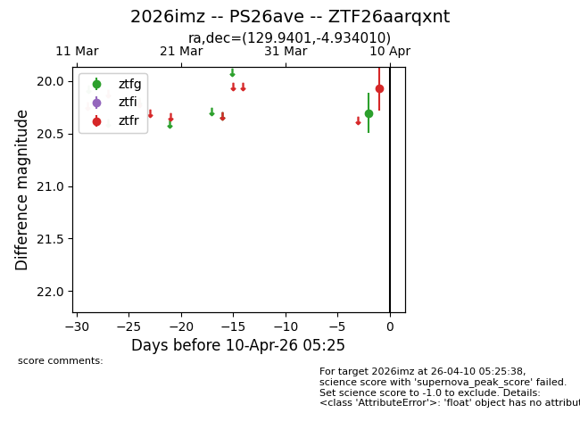
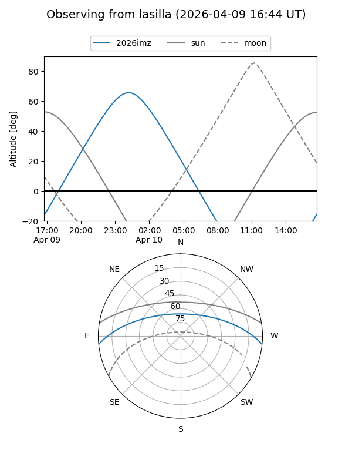
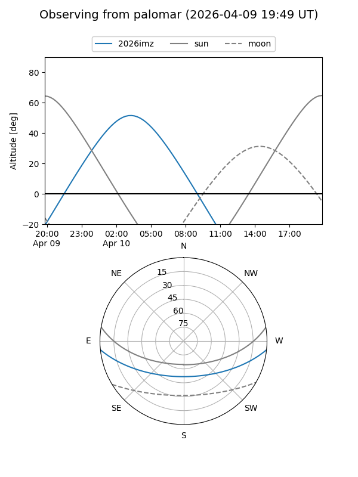

2026imz
Target 2026imz at 2026-04-10 05:33
Aliases and brokers:
FINK: link
Lasair: link
ALeRCE: link
TNS: link
YSE: link
alt names
ZTF26aarqxnt (ztf,fink_ztf)
2026imz (tns,yse)
PS26ave (panstarrs)
Coordinates:
equatorial (ra, dec) = 129.9401,-4.93401
equatorial (HMS+DMS) = 08:39:45.61,-04:56:02.44
galactic (l, b) = (230.6472,+21.37320)
Flags:
Photometry:
last ztfg=20.31, ztfr=20.07
1 ztfg, 1 ztfr detections
Lightcurve

Visibility


Additional plots